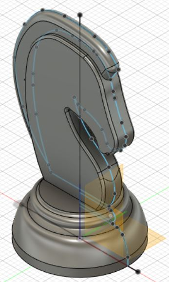

Fusion 360
This is my process of making a 3D model of a Knight Chess piece, starting from a 2D drawing.
Here's how I did it:
Finding a suitable sketch
Finding a suitable image to begin with makes things easier. However, there are many things to consider, such as how the final image will look like. It is recommend to just start with a simple one. Here's what I picked:

Canvas And Drawing
So we insert the image as a canvas to allow us to better draw the silhouette and extrude.
Then we draw the silhouette. Since my base will be circular, I use the revolve tool. My Knight body is flat so I'll use extrude.
Extruding and Revolving
As said above, I'll be using a combination of revolving and extruding to get my desired outcome. The process will vary depending on your original image and your desired outcome.
Fine-tuning
The model is essential done. However, I want my knight to have rounded edges. Thus, I'll be using the fillet tool to round off the edges.
3D Model
My model is titled wrongly, but it still works, so don't mind it.